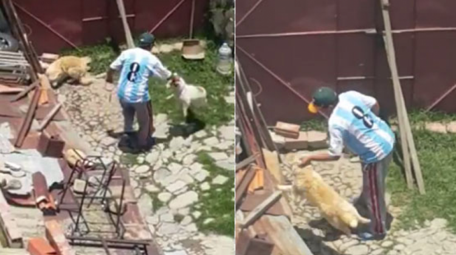
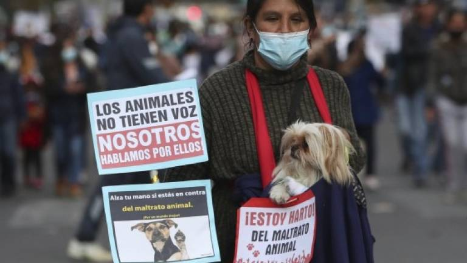

Muy pronto en aplicaciones!!!
La Paz, 30 de noviembre (ANF).- Un hombre identificado como Miguel H. T. fue captado en un video golpeando a sus dos perros en un domicilio particular, ubicado en la zona Santa Rita de la ciudad de La Paz.
La columna atravesó el centro paceño con el objetivo de crear "conciencia social" y "sensibilizar" a la población sobre el cuidado de los animales y el medioambiente.
